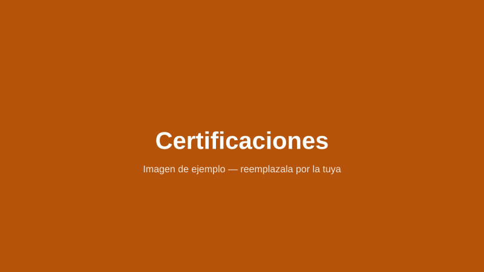

Certificaciones
Mi formación
Cursos y certificaciones que completé para mejorar mis habilidades.
Certificación 1
Nombre del curso, institución y año en que lo obtuviste.
Certificación 2
Nombre del curso, institución y año en que lo obtuviste.
